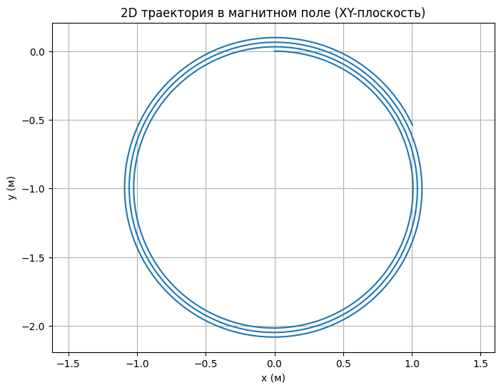
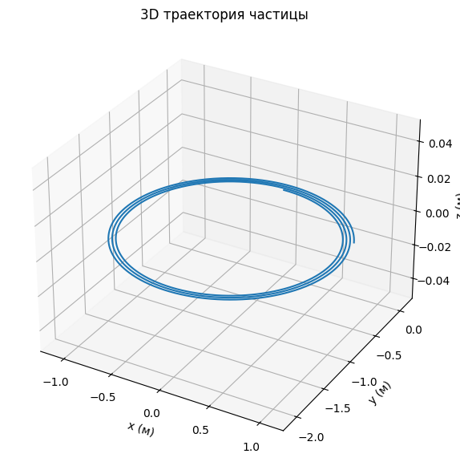
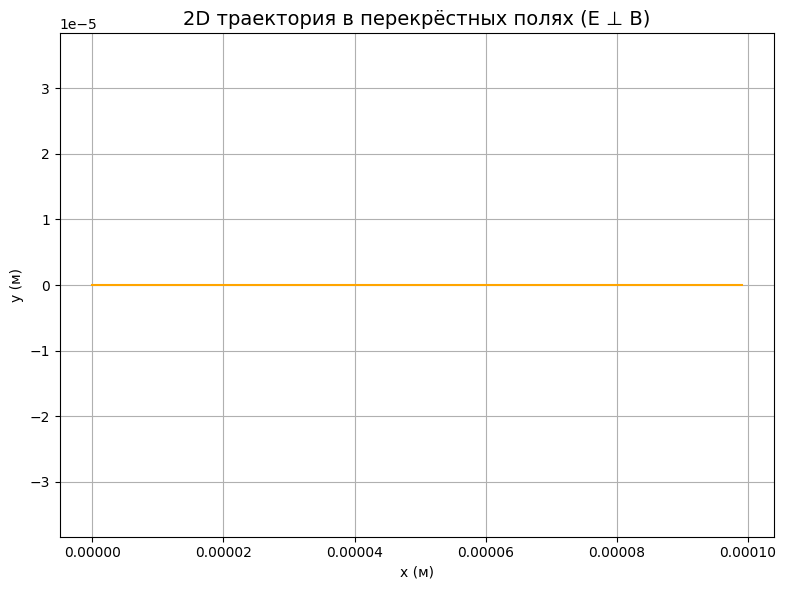
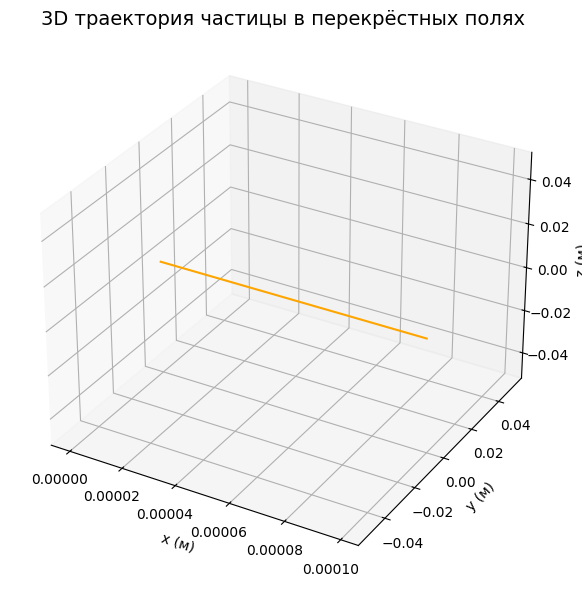

Problem 1
Electromagnetism
Problem 1 — Simulation of the Lorentz Force
🌟 Motivation
The Lorentz force governs how a charged particle moves through electric and magnetic fields. Understanding this phenomenon is essential in a wide range of scientific and engineering applications:
- ⚛ Particle Accelerators — Guide and speed up particles using magnetic fields.
- 🧪 Mass Spectrometry — Identify chemical substances by separating ions by mass and charge.
- 🔥 Plasma Confinement — Trap hot plasma in devices for nuclear fusion (e.g., Tokamaks).
- 🌌 Space Physics — Explain how charged particles (like solar wind) interact with magnetic fields in space.
The Lorentz force is described by the equation:
𝐅 = q(𝐄 + 𝐯 × 𝐁)
Where:
- 𝐅 — Lorentz force
- q — Particle charge
- 𝐄 — Electric field vector
- 𝐯 — Particle velocity
- 𝐁 — Magnetic field vector
- × — Cross product
⚙️ 1. Applications of the Lorentz Force
🧭 Real-World Examples:
- Cyclotrons use magnetic fields to spiral particles at high speeds.
- Mass spectrometers rely on Lorentz force to sort ions.
- Fusion reactors contain plasma using powerful magnetic traps.
- Satellites and space probes analyze particle motion in Earth’s magnetosphere.
🔍 Roles of Fields:
- Electric field (𝐄) accelerates or slows the particle.
- Magnetic field (𝐁) bends the trajectory, causing circular or spiral paths.
🧮 2. Simulating Particle Motion
We will explore different field configurations:
- Only Magnetic Field
- Parallel Electric and Magnetic Fields
- Perpendicular (Crossed) Fields
To simulate motion, we’ll use numerical methods like the Euler method to compute the particle’s trajectory step by step.
🎛 3. Parameters to Explore
To understand the system behavior, we’ll vary the following:
- 🔌 Electric Field Strength (𝐄)
- 🧲 Magnetic Field Strength (𝐁)
- 🚀 Initial Velocity (𝐯)
- ⚡ Charge (q)
- ⚖️ Mass (m)
These parameters affect:
- The radius of circular motion
- The drift speed of the particle in crossed fields
- The acceleration or deflection of the path
📈 4. Visualization
We'll build 2D and 3D plots of particle trajectories to visualize motion under various conditions.
✨ Key Physical Quantities:
-
Larmor Radius (circular orbit in magnetic field):
[ r = \(\frac{m \cdot v}{q \cdot B}\) ] -
Drift Velocity in crossed electric and magnetic fields:
[ \(\vec{v}_{\text{drift}} = \frac{\vec{E} \times \vec{B}}{B^2}\) ]
These plots will illustrate how particles spiral, drift, and accelerate depending on the field setup.


🧪 Discussion of Results
🔄 Trajectory Shape
The particle moves in a circular path within a plane perpendicular to the magnetic field.
This is characteristic motion observed in devices like cyclotrons and mass spectrometers.
⚡ No Electric Field
We set the electric field to 𝐄 = 0,
so there is no acceleration along the field direction —
the particle only rotates in response to the magnetic field.
🧠 Physical Interpretation
The radius of the circular trajectory depends on the particle's:
- velocity (v)
- mass (m)
- charge (q)
- magnetic field strength (B)
It is given by the formula:
This type of motion is utilized in a cyclotron,
where the magnetic field bends the trajectory into a spiral,
allowing for gradual acceleration of particles.
import numpy as np
import matplotlib.pyplot as plt
from mpl_toolkits.mplot3d import Axes3D
# Настройки начальных параметров
q = 1.0 # заряд (Кл)
m = 1.0 # масса (кг)
v0 = np.array([1.0, 0.0, 0.0]) # начальная скорость (м/с)
E = np.array([0.0, 0.0, 0.0]) # электрическое поле (В/м)
B = np.array([0.0, 0.0, 1.0]) # магнитное поле (Тл)
dt = 0.01 # шаг по времени (с)
T = 20 # общее время симуляции (с)
steps = int(T / dt)
# Инициализация массивов
r = np.zeros((steps, 3)) # координаты
v = np.zeros((steps, 3)) # скорости
r[0] = [0.0, 0.0, 0.0]
v[0] = v0
# Метод Эйлера для расчета траектории
for i in range(steps - 1):
F = q * (E + np.cross(v[i], B))
a = F / m
v[i + 1] = v[i] + a * dt
r[i + 1] = r[i] + v[i] * dt
# --- ВИЗУАЛИЗАЦИЯ ---
# 2D график
plt.figure(figsize=(8, 6))
plt.plot(r[:, 0], r[:, 1])
plt.title("2D траектория в магнитном поле (XY-плоскость)")
plt.xlabel("x (м)")
plt.ylabel("y (м)")
plt.grid(True)
plt.axis("equal")
plt.show()
# 3D график
fig = plt.figure(figsize=(10, 7))
ax = fig.add_subplot(111, projection='3d')
ax.plot(r[:, 0], r[:, 1], r[:, 2])
ax.set_title("3D траектория частицы")
ax.set_xlabel("x (м)")
ax.set_ylabel("y (м)")
ax.set_zlabel("z (м)")
plt.show()


🔍 Analysis of Results
🌀 Type of Motion
The particle follows a drift trajectory,
where circular motion is superimposed on a linear motion along the X-axis.
This is a classic example of 𝐄 × 𝐁 drift.
⚙️ Drift Velocity — Theoretical Calculation
The drift velocity is given by:
Given:
- 𝐄 = [0, 1, 0]
- 𝐁 = [0, 0, 1]
Then:
✅ Result:
The particle drifts along the X-axis with a constant velocity.
🧩 Practical Significance
This 𝐄 × 𝐁 drift effect is widely used in:
- Plasma physics — to control plasma behavior in magnetic confinement systems
- Magnetic traps — for confining charged particles
- Beam control — in devices requiring precise particle guidance
It is a key mechanism in systems such as fusion reactors, mass filters, and charged particle beams.
import numpy as np
import matplotlib.pyplot as plt
from mpl_toolkits.mplot3d import Axes3D
# Параметры
q = 1.6e-19 # заряд (Кл)
m = 9.1e-31 # масса (кг)
E = np.array([0, 1e3, 0]) # Электрическое поле (В/м)
B = np.array([0, 0, 1]) # Магнитное поле (Тл)
v0 = np.cross(E, B) / np.linalg.norm(B)**2 # скорость дрейфа
# Временные параметры
t_max = 1e-7
dt = 1e-9
t = np.arange(0, t_max, dt)
# Положение частицы
x = v0[0] * t
y = v0[1] * t
z = v0[2] * t
# === Построение графиков ===
fig = plt.figure(figsize=(10, 10))
# --- 2D график ---
ax1 = fig.add_subplot(2, 1, 1)
ax1.plot(x, y, color='orange')
ax1.set_title('2D траектория в перекрёстных полях (E ⊥ B)', fontsize=14)
ax1.set_xlabel('x (м)')
ax1.set_ylabel('y (м)')
ax1.grid(True)
ax1.axis('equal')
# --- 3D график ---
ax2 = fig.add_subplot(2, 1, 2, projection='3d')
ax2.plot(x, y, z, color='orange')
ax2.set_title('3D траектория частицы в перекрёстных полях', fontsize=14)
ax2.set_xlabel('x (м)')
ax2.set_ylabel('y (м)')
ax2.set_zlabel('z (м)')
plt.tight_layout()
plt.show()